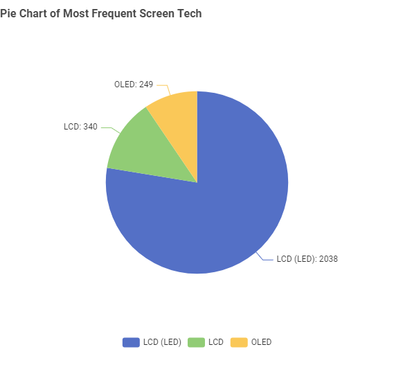
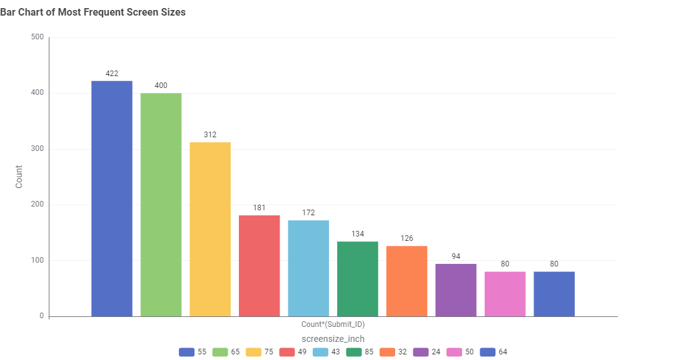
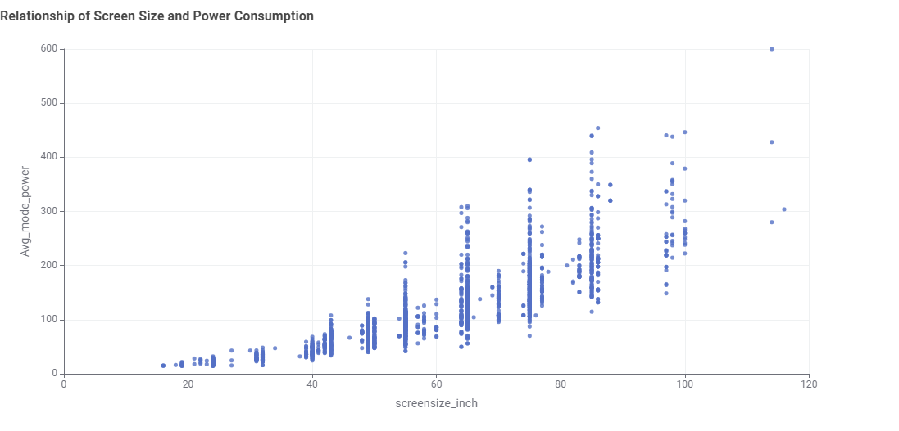
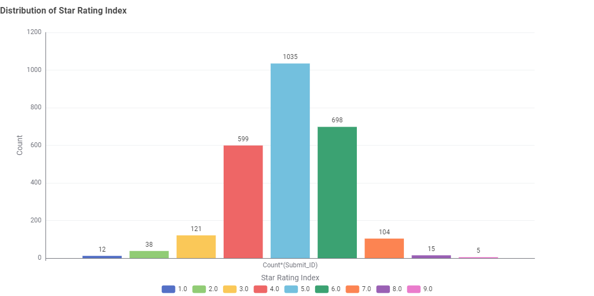

Television Page
TV Energy Efficiency Storyboard
This section showcased the insights from the Australian Government’s Television Energy Rating dataset.
It provides visualisation that helps Australian consumers to understand the trend and make smarter choices while purchasing television.
1. Which screen technology is most common?
LCD (LED) technology dominates the Australian market, making it the most widely available and accessible screen technology for consumer. In contrast, OLED is less common.
2. What screen sizes are most frequently sold in Australia?
The most popular screen size is 55 inches, followed by other larger screen size models. This highlights the screen size range that most consumer prefer.
3. Does larger screen size uses more energy?
As the screen size increases, the average mode power also rises. Choosing the bigger display screen might face higher energy bills.
4. How efficient TVs are across the market?
Energy efficiency is also about balancing the performance with energy use. Most TV have star rating between 4 to 6 showing that the majority of models meet moderate to high efficiency standards.
How to Choose an Energy-Efficient TV
☀ Check the Energy Rating
Look for TVs with higher star ratings — more stars mean better efficiency.
☀ Consider Screen Size
Bigger screens use more power. Choose the size that fits your room best.
☀ Compare Technologies
LED and OLED TVs are more efficient than older plasma models.
☀ Use Energy-Saving Modes
Enable eco or power-saving settings to cut down electricity usage.
☀ Mind Standby Power
Even when off, TVs can draw power. Switch off at the wall to save.